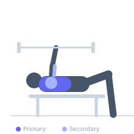

Exercise guide / Barbell Bench Press
Barbell Bench Press
The barbell bench press is a foundational horizontal pushing movement performed lying on a flat bench. It is one of the most effective exercises for developing overall chest mass, anterior deltoid strength, and triceps power. The fixed barbell path and bilateral loading allow for maximum load and progressive overload potential.
Primary muscles
pectoralis major sternal
pectoralis major clavicular
Secondary muscles
deltoid anterior
triceps long head
triceps lateral head
triceps medial head
Stabilizers
supraspinatus
infraspinatus
subscapularis
pectoralis minor
Equipment
Standard Barbell
Flat Bench
Optional
Power Rack (Squat Cage)


Starting position
- Lie supine on a flat bench with eyes directly under the bar. Place feet flat on the floor. Grip the bar slightly wider than shoulder width with an overhand grip. Unrack the bar and hold it directly over the chest with arms fully extended.
Setup
- Set the barbell in a rack at a height you can unrack with arms nearly extended. Lie back so your eyes are under the bar. Arch your upper back naturally and retract your shoulder blades. Grip the bar with thumbs wrapped around it. Feet should be flat or on toes depending on preference.
Steps
- Take a deep breath and brace your core and upper back firmly.
- Unrack the bar by pressing it out of the hooks and locking it over your chest with straight arms.
- Lower the bar under control in a slight arc toward your lower chest or upper abdomen — roughly at the nipple line.
- Touch the bar to your chest lightly without bouncing or losing tension.
- Drive the bar back up along the same arc, pressing it toward your upper chest and exhaling forcefully at the top.
- Re-rack the bar by guiding it back into the hooks after completing all reps.
Coaching cues
- Squeeze oranges in your armpits — retract and depress the shoulder blades
- Drive your feet into the floor to create a stable base
- Think about bending the bar like a horseshoe as you press
Breathing
- Inhale and brace before lowering the bar. Hold or take a controlled breath during the descent. Exhale forcefully as you press the bar back to the starting position.
Range of motion
- Lower the bar until it touches the chest. Press to full elbow extension without locking out aggressively. A full range of motion maximizes pectoral stretch and development.
Tempo
- 2-1-1-0: 2 seconds eccentric descent, 1 second pause at chest, 1 second concentric press, 0 second pause at top. For strength, reduce eccentric to 1 second.
Common mistakes
- Allowing the wrists to bend excessively backward — keep wrists stacked over the forearms
- Flaring the elbows to 90 degrees — tuck slightly at 45–75 degrees to protect the shoulder
- Bouncing the bar off the chest to generate momentum
- Losing upper back tightness by allowing shoulder blades to protract during the press
- Raising the hips off the bench during the concentric phase
Safety
- Always use a spotter or safety catches when training near maximal loads
- Warm up rotator cuff muscles before heavy pressing
- Do not use a thumbless (suicide) grip — wrap the thumbs fully around the bar
Training
- strength: 1–5 reps
- hypertrophy: 6–12 reps
- endurance: 15–20 reps
- strength: 3–6 sets
- hypertrophy: 3–5 sets
- endurance: 2–4 sets
- Rest: {'strength': 180, 'hypertrophy': 90, 'endurance': 45}